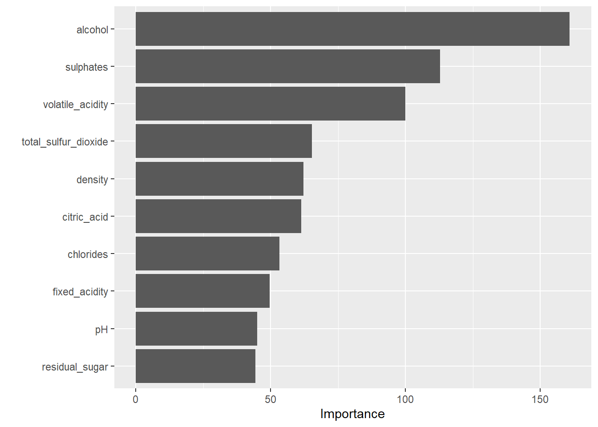

Deze blog is een inleiding op de workflow van Machine Learning.
Author
Harrie Jonkman en Mr.X
Published
March 25, 2022
INTRODUCTION
Tidymodels is the relatively new package for machine learning with R. It is the successor to the caret package which is used during the Introduction to Data Science-course of the Harvard University (Kuhn & Johnson, 2013; Irizarry, 2020). Tidymodels is a collection of modeling packages that, like the tidyverse, has consistent API and are designed to work together specifically to support predictive analytics and machine learning. I followed and looked at different books (Kuhn & Silge, 2021; Kuhn en Johnson, 2019) blogs (Lendway, 2020; Roamiar (2021); Ruiz (2019), Barter (2019; Seyedia (2021) and couses/video’s (Lewis, 2020; Silge, 2021; Silge 2020). I tried to learn this new system and wrote different blogs in Dutch on thishere.
Tidymodels is a grammar for modeling that makes things a lot easier and provides a unified modeling and analysis interface to seamlessly access several model varities in R. tidymodels is a meta-package that installs and load the core packages listed below that you need for modeling and machine learning;
- recipes is tidy interface for to data pre-processing tools for feature/variables engineering;
- rsample provides infrastucture for efficient data splitting and resampling;
- parsnip is a tidy, unified interface to models that can be used to try a range of models without getting bagged down in the syntactical minutae of the underlying packages;
- tune helps you optimize the hyperparameters of your model and chose pre-processing steps;
- yardstick measures the effectiveness of models during performance metrics;
- workflow bundles your pre-processing modeling and post-processing together;
- dials creates and manages tuning parameters and parameters grids;
- brooms convert the information in common statistical R objects into user-friendly predictable formats.
This year (2021) I learned working with tidymodels. I tried to finish the Capstone course with the use of this metapackage. I will show you the different steps in the working proces.
Let us first open the packages used in this article (tidymodels, but also tidyverse, finalfit, caret, rpart and randomforest):
PROBLEM DEFINITION
Data mining approaches are used in this article to predict human wine taste preferences that are based on easily available analytical tests at certification steps. A data set on red wine from Portugal is used here to research quality of the wine and different predictors for the quality (Cortez et al., 2009) Supervised machine learning supports us in this. In this world two kind of algorithms are often used. One is called regression (see also Attalides, 2020) and the other is called classification (not used here).
In this study we use regression for predicting quality of wine based on several predictors.The wine data used here contains the following eleven independent variables (predictors, I1-I11) and one dependent variable (outcome, D1)
fixed_acidity volatile_acidity citric_acid residual_sugar
Min. : 4.60 Min. :0.1200 Min. :0.000 Min. : 0.900
1st Qu.: 7.10 1st Qu.:0.3900 1st Qu.:0.090 1st Qu.: 1.900
Median : 7.90 Median :0.5200 Median :0.260 Median : 2.200
Mean : 8.32 Mean :0.5275 Mean :0.271 Mean : 2.539
3rd Qu.: 9.20 3rd Qu.:0.6400 3rd Qu.:0.420 3rd Qu.: 2.600
Max. :15.90 Max. :1.5800 Max. :1.000 Max. :15.500
NA's :3
chlorides free_sulfur_dioxide total_sulfur_dioxide density
Min. :0.01200 Min. : 1.00 Min. : 6.00 Min. :0.9901
1st Qu.:0.07000 1st Qu.: 7.00 1st Qu.: 22.00 1st Qu.:0.9956
Median :0.07900 Median :14.00 Median : 38.00 Median :0.9968
Mean :0.08747 Mean :15.87 Mean : 46.47 Mean :0.9967
3rd Qu.:0.09000 3rd Qu.:21.00 3rd Qu.: 62.00 3rd Qu.:0.9978
Max. :0.61100 Max. :72.00 Max. :289.00 Max. :1.0037
pH sulphates alcohol quality
Min. :2.740 Min. :0.3300 Min. : 8.40 Min. :3.000
1st Qu.:3.210 1st Qu.:0.5500 1st Qu.: 9.50 1st Qu.:5.000
Median :3.310 Median :0.6200 Median :10.20 Median :6.000
Mean :3.311 Mean :0.6581 Mean :10.43 Mean :5.636
3rd Qu.:3.400 3rd Qu.:0.7300 3rd Qu.:11.10 3rd Qu.:6.000
Max. :4.010 Max. :2.0000 Max. :14.90 Max. :8.000
NA's :5
We have twelve variables inside this data set which are all continuous variables.
At this moment we want to know also something about the missings?
We have eight missings (three on volatile.acidity and five on alcohol). We remove any missing values and kept 1591 cases. Let us show it here.
Now we have wrangeled and preprocessed the data, we can explore them. Let us first vizualise correlations within the data-set. For this you need the package corrplot.
Now we understand the data we have to split the data into: a) Train set, b) Test set. Here we work on the last pre-model analysis. All functions below come from the rsample package, which is part of tidymodels. First we set the seed to fix the randomization and to make reproducabiltiy possible. We use 80% of the dataset for the trainingset. For a big dataset as this wine-data set with 1591 observations, 80:20-splitting works well. We split it and than make a training- and test-dataset.
MODELING AND DATA ANALYSIS
Now we will compare different models with each other and want to know which one works the best for this data set with this dependent and these independent variables. This part of machine learning is called supervised learning of which the basic goal is to find a function that accurately describes how different measured explanatory variables can be combined to make a prediction about the target variable. We start with linear modelling. Regression models can help us quantify the magnitude and direction of relationships among variables.
1. Linear modelling
For the outcome or target variable quality, we first research some different linear regression models and choose the best one based on indices. For these tasks, we store each formula in a different R object.
We have to define the data: - The target variable. quality is the target variable and it is numeric - The features of the model (predictors) are the other (independent) variables here and they are numeric variables also.
Futhermore, we design a simple formula to predict the target variable. In this formula (f1) all the available 11 predictors are used.
Let us fit a linear regression model to the data. What we do: - First, we created an object that will store the model fit.
- Then, we specify the model.
- Then, We specify also that we work with regression because of the continue target variable (quality). - Then, we specify also the lm package to train the model. - And we finish in this chunck by adding the formula and the training data to fit the model.
Let us see how this workflow works.
lm_fit <-linear_reg() %>%set_mode("regression") %>%set_engine("lm") %>%fit(formula, data = train_data)
We present the results on different ways
But this is probably the best and clearest way to show the results.
After we worked with linear regression, it is possible to work with other models which maybe give us better results for predicting the outcome. Let us first look at decision tree modeling. A decision tree is tree-like flowchart that assigns labels to individual observations. It splits it into homogeneous subsets, which share the same class labels. For this you need decision tree package and for this you have to install and open the library of rpart. We see similar steps here in the machine learning workflow. Once again, the workflow: - define an object dt_fit;
- tell that we work with decision tree;
- set the mode on regression;
- set the engine on rpart;
- fit the formula on the training data-set.
As a sidestep, we can visualize this, but than we have to install and open the visNetwork and sparkline packages. Then we see this.
library(visNetwork)library(sparkline)
Warning: package 'sparkline' was built under R version 4.1.3
visTree(dt_fit$fit)
3. Random forest
A third model we use here is RandomForest. RandomForest is a natural extension of DecisionTree. A RandomForest is a collection of Deciontrees that are aggregated by majority rule, and is in essence a collection ‘bootstrapped’ decision trees. You need to install randomForest package and open the library randomForest. And also here, once again the same steps: - define object rf_fit;
- tell we want to use randomforest;
- set the mode again on regression;
- set the engine here on randomForest;
- fit the model on the training_set.
Print these results (not shown here).
print(rf_fit$fit)
Call:
randomForest(x = maybe_data_frame(x), y = y)
Type of random forest: regression
Number of trees: 500
No. of variables tried at each split: 3
Mean of squared residuals: 0.3259127
% Var explained: 50.71
EVALUATION AND PREDICTION
Now we have three objects of the three models we ran and which we have to compare and evaluate. We do this on the test-set. We compare the three models (lm_fit, dt_fit and rf_fit) on the Men Square Score (MSE) score. We need to find a model algorithm that produces predictors for the outcome (quality) that minimizes the MSE-score. So, the lower the mse-score of the model, the better.
1. Accuracy of the lm-model
Let us first look at the accuracy of the linear-model.
Now we see a new column, .pred, with a predicted scores for each row.
It gives here the following mse-score for linear modeling, which we show here.
head(lm_mse)
# A tibble: 1 x 2
type MSE
<chr> <dbl>
1 lm 0.467
2. Accuracy of the Decision Tree Model
Then we look at the accuracy of the DecisionTree Model.
The decision model gives the following mse-score.
head(dt_mse)
# A tibble: 1 x 2
type MSE
<chr> <dbl>
1 dt 0.596
3. Accuracy of the Random Forest Model
And then ofcourse we also have to look at the accuracy of the RandomForest-model.
The Random Forest Model gives us the following mse-score:
head(rf_mse)
# A tibble: 1 x 2
type MSE
<chr> <dbl>
1 rf 0.408
All results together
Let us put all the results together and compare them with each other.
Let us show these results together.
head(res)
# A tibble: 3 x 2
type MSE
<chr> <dbl>
1 lm 0.467
2 dt 0.596
3 rf 0.408
Altogether the prediction scores don’t look very well, but we know that RandomForest is the best model for prediction.
metrics(rf_pred, quality, pred)
# A tibble: 3 x 3
.metric .estimator .estimate
<chr> <chr> <dbl>
1 rmse standard 0.638
2 rsq standard 0.378
3 mae standard 0.351
Now we choosed the random forest model, we can look at the importance of the ten independent variables and compare them with each other. We see that alcohol is the most import predictor for quality followed by sulphates ad volatile_acidity. Residul-sugar, pH and fixed_acidity are the lowest important predictors for quality of wine.
library(vip)vip(rf_fit)

Let us look at which percentage of the test sample are wrongly predicted.
\(105/307*100= 34,2%\) is not correctly predicted. So \(65,8%\) is predicted correctly with this model. We choose the random_forest model as the best opportunity here. Let us look at it once again.
In this simple scenario, we were interested in seeing how the model performs on the testing data that were left out. The code fitted the model to the training data and apply it to the testing data. There are other ways we could have done this, but the way we do it here will be useful when we start using more complex models where we need to tune model parameters. Root Mean Square Error (RMSE) is a standard way to measure the error of a model in predicting quantitative data. RMSE is a good measure to use if we want to estimate the standard deviation of a typical observed value from our model’s prediction, R-squared is a statistical measure that represents the goodness of fit of a regression model. The ideal value for r-square is 1. The closer the value of r-square to 1, the better is the model fitted. In Machine Learning, MAE is a model evaluation metric often used with regression models. After the model is fitted and applied, we collected the performance metrics and display them and show the predictions from the testing data. 34,2% is predicted wrong, which is at the end maybe a bit disappointing after all the work. But we know what the best model is for this data-set.
This work has some strengths We found a uniform and consistent way to compare models with each and to choose the best one out of them. One of the big advantages of the random forest model (which is choosen here) is the versality and flexibility. It can be used for both regression and classification problems. But this work has also some limitations. Random forest is good for predictions and regression, so this could be used by the researcher for interpretation here. But for of modelling is relatively new for this researcher (instead of linear regression for example) so he found himself restricted here at the end. A limitation of random forest is also that this algorithm is fast to train, but quit slow to create predictions once they are trained: a more accurate prediction needs more trees, which results in a slower model. And a last limitation which we have to mention here is, that we used only three models and maybe other models were better for these data.
Lesson learned is that we found a consitent workflow for analyzing data as presented here on quality of wine. It is a very good starting point for further research. The next step would be now to work on increasing the predictive power of the model and start with tuning on the hyperparameters.
Baumer, B. Kaplan, D.T., Horton, N.J. (2017). Modern data science with R. CRCPress: Boca Raton.
Boehmke, B. & Greenwell, B. (2020). Hands on machine learning with R. Bookdown version
Cortez, P., Cerdeira, A., Almeida, F., Matos, T. & Reis, J. (2009). Modeling wine prefernces by data mining from physicochemical properties. Decision Support Systems, 47, 547-533.
Hartie, T., Tibskirani, R. & Friedmann, J. (2009). The elements of statistical learning. Data mining, inference and prediction. 2nd edition. Springer: New York.
Irizarry, R.A. (2020). Introduction to data science. Data analysis and prediction algorithms with R. CRC Press: Boca Raton.
James, S., Witten, D., Hastie, T.. & Tibskirani, R. (2013). An introduction to statistical learning with application in R.